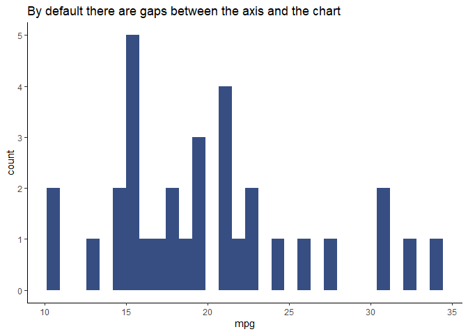

The goal of ggdesign is to make it easier to export charts from ggplot2, so they can then be edited in vector graphic design software (e.g. Adobe Illustrator, Figma, Affinity Designer).
Hopefully, ggdesign will be helpful for two groups of people:
- Designers who want to include R and
ggplot2in their data visualisation design workflow.So, they can create basic svg versions of a chart which they can then enhance in vector design software. - R /
ggplot2users who want to export their charts for editing in design software. So, they can make enhancements to their charts which are difficult (or impossible) to make in code.
Installation
You can install the development version of ggdesign from GitHub with:
# install.packages("devtools")
devtools::install_github("tbk03/ggdesign")Cleaning up the axis on a chart before exporting as an svg
By default there are gaps between the axis and the data displayed in the chart. Often when editing a chart by hand in design software you will want the data to fit snuggly to the axis. clean_axis() helps you to do this without getting to involved in the details of how ggplot works.
# import packages
library(ggdesign)
library(ggplot2)
# get a colour to use in the plot from the ggdesign palette
fill_colour <- get_colours(1)
# create a very basic plot for demonstration
p <- ggplot(mtcars, aes(mpg)) +
geom_histogram(fill = fill_colour)
# show the issue with the gaps
p +
ggtitle("By default there are gaps between the axis and the chart")
# addressing the issue with axis clean
p +
clean_axis() + # removes the gaps
ggtitle("The gaps can be removed to make everything look neater")Exporting a chart as an svg (with text and other chart structure about the right size!)
A challenge often faced when exporting charts as svgs to edit in vector design software, is the sizing of the non-data elements of the chart. If you export a large chart (say 200mm by 200m), when you open it in the design software the text can be tiny and the axis/gridlines very thin.
theme_to_size() estimates an appropriate text size and line weights based on the height and width of the plot. These estimates might not prove to be ideal, but when you open the svg to edit you should be able to see everything roughly in place. Of course, everything can be tweaked in the design software before the chart is finalised.
Due to the way ggplot2 works, you have to pass the chart width, height and units to both theme_to_size() (for sizing non-data elements of the chart) and ggsave() (for exporting the chart), as shown below.
# define the size of the exported chart
p_width <- 100
p_height <- 60
p_units <- "mm"
# resize the text, axis and gridlines on the plot above to better match the
# size of the exported chart
p_sized <- p +
theme_to_size(width = p_width, height = p_height, units = p_units)
# save the chart as svg for editting
ggsave("man/figures/chart_theme_to_size.svg",
p_sized,
width = p_width, height = p_height, units = p_units
)Exporting a chart as an svg and making sure you edit the structure
When editing a chart in design software, paying attention to the details of the chart structure can really enhance the overall design aesthetic. ggdesign provides theme_edit to help you focus on these design decisions. It deliberately applies inappropriate and offputting colours to the structural elements of the chart (inc the axis and gridlines). So, once you import the chart into your design software you are forced to consider and make deliberate changes to these structural elements. Each group of elements (e.g. minor gridlines) are coloured the same, so you can use ‘select same colour’ in your design software to edit them all together.
# create a slightly different chart for demonstration
# the bars are transparent in this chart so you can see how theme_edit()
# changed the structure of the chart
p <- ggplot(mtcars, aes(mpg)) +
geom_histogram(
fill = fill_colour,
alpha = 0.2
) # fade bars into background
p +
clean_axis() +
theme_edit() + # brings the chart structure to your attention
ggtitle("The bars are faded out in this example so you can see the structure of the chart")
# save the chart as svg for editting
ggsave("man/figures/chart_to_edit.svg")